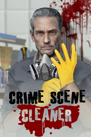

Crime Scene Cleaner
Detalles
|  | |
| Tiempo de juego | No Jugado |
| Última actividad | Nunca |
| Añadido | 11/13/2024 0:35:38 |
| Modificado | 11/13/2024 1:09:06 |
| Estado de finalización | No Jugado |
| Librería | Playnite |
| Fuente | PORCHE |
| Plataforma | PC (Windows) |
| Fecha de lanzamiento | |
| Puntuación de la Comunidad | 95 |
| Puntuación de la Crítica | |
| Puntuación de usuario | |
| Género | Acción Simuladores |
| Desarrollador | President Studio |
| Editor | PlayWay S.A. President Studio |
| Característica | Cloud Saves Compat. Total Con Mando Logros De Préstamo Familiar Un Jugador |
| Enlaces | Punto de encuentro Discusiones Guías Noticias Página de la tienda PCGamingWiki Logros |
| Tag | Acción Ambientales Aventura Crimen Divertidos Exploración Gran banda sonora Hackeo Indie Para adultos Primera persona Realistas Robos Sangriento Sigilo Simulación Simulador de caminar Simulador de vida Un jugador Violentos |
Descripción
Cuando las compañías de seguros evitan la responsabilidad, entonces depende de ti salvar la vida de tu hija. Esto requerirá una clientela sucia y turbia, pero no tienes más opciones, ¿verdad? Cuando el jefe mayor llame de nuevo, trae un balde y una esponja porque realmente los necesitarás. ¿Estás listo para el reto?

Necesitas nervios de acero para limpiar escenas de crimen dejadas por criminales grandes y pequeños. Puede que no tengas dinero para pagar por la estancia de tu hija en un hospital, pero lo que tienes es un juego particular de habilidades. Con la ayuda de un arsenal completo de equipos, limpiarás sangre, recogerás cadáveres y eliminarás cualquier olor. Todo esto bajo la presión de un reloj en marcha y una policía que sigue cuidadosamente tus pasos.


¿Eres el malo? Simplemente eres un hombre con cerebro y fuerza para tomarse el destino por su mano. Eres el hombre del momento, así que limpia, agacha la cabeza y consigue ese dinero.
Necesitas nervios de acero para limpiar escenas de crimen dejadas por criminales grandes y pequeños. Puede que no tengas dinero para pagar por la estancia de tu hija en un hospital, pero lo que tienes es un juego particular de habilidades. Con la ayuda de un arsenal completo de equipos, limpiarás sangre, recogerás cadáveres y eliminarás cualquier olor. Todo esto bajo la presión de un reloj en marcha y una policía que sigue cuidadosamente tus pasos.
Características Clave:
- Limpieza Profunda: Agarra tu coleto y esponja de confianza, ellos serán de gran utilidad para la mayoría de las misiones. Cuando sea difícil lidiar con todo el problema, saca rápidamente la hidrolavadora y limpia espacios externos con profundidad. Además, cuando el olor sea demasiado fuerte, tendrás más que solo un eliminador de olores.
- Diversidad de Armas: Algunas veces el equipo que tienes no es lo suficientemente fuerte y necesita una fuerza adicional. Si tus lámparas y linternas no son lo suficientemente fuertes, ¡entonces adquiere unas nuevas! Si habrá mucha sangre en el exterior, adquiere entonces un juego diferente de boquillas de hidrolavadora. Así que antes de cada misión echa un vistazo a tu almacenamiento e inventario, puede que lo necesites para adquirir algo más grande y mejor.
- Bolsillos Profundos: ¡Produce dinero en una forma en la que puedas! Los pandilleros tienen fama de ser generosos, pero algunas veces eso nos es suficiente. Además, ciertos objetos pueden resultar siendo muy tentadores. ¿Quién va a extrañar ese costoso reloj? El propietario ya está muerto.
- La Familia es lo Importante: Con todas las cosas horripilantes que verás y harás en cada trabajo, no debes olvidar que lo haces por ella. La vida de un padre soltero tiene sus retos y tienes que superarlos todos.
¿Eres el malo? Simplemente eres un hombre con cerebro y fuerza para tomarse el destino por su mano. Eres el hombre del momento, así que limpia, agacha la cabeza y consigue ese dinero.